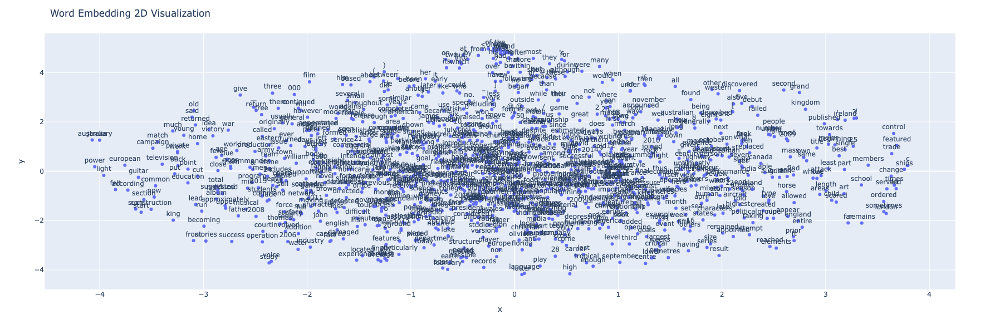

Word Embeddings & Text Classification with Neural Networks
This note provides a structured guide for training text classifiers using word embeddings and neural networks, especially focusing on Continuous Bag-of-Words (CBOW) and dense embeddings. The aim is to reference steps for preparing data, understanding training processes, and making necessary adjustments to fully train a CBOW model.
1. Word2Vec Paradigm
The Word2Vec approach is central in modern NLP. It utilizes two main architectures: CBOW and Skip-gram. CBOW predicts a word given its surrounding context, while Skip-gram predicts surrounding words based on a central word. This post focuses on the CBOW model, leveraging dense embeddings.
Every modern NLP algorithm uses embeddings as the representation of word meaning. A word's feature is captured in a word vector, which is a numerical representation of the word. These vectors start with 0-based weights and evolve during training. Two words are considered similar in meaning if their context vectors are similar. To measure similarity, the dot product is often used. The dot product calculates the degree of alignment between two vectors. A higher dot product indicates stronger similarity between the two vectors.
dot product(v, w) = v · w = Σi=1N viwi = v1w1 + v2w2 + ... + vNwN
To transform the dot product into a probability, we apply the sigmoid function. This function maps the result to a range between 0 and 1, enabling probabilistic interpretations.
sigmoid(x) = 1 / (1 + e-x)
This function ensures that large positive values of x are mapped close to 1, and large negative values are mapped close to 0. It is commonly used in binary classification tasks to predict probabilities.
While effective, the dot product has a known limitation: it overly favors frequent words. Words with higher frequencies tend to have embeddings with larger magnitudes Magnitudes represent the length or size of a vector, calculated as the square root of the sum of its squared components, and are crucial for normalizing vectors in metrics like cosine similarity. , resulting in higher dot product values even if the vectors are not directionally similar. This bias can misrepresent the true semantic similarity between words.
To address this, we normalize the vectors, resulting in cosine similarity which removes the influence of vector magnitude and focuses on their directional alignment. The formula for cosine similarity is:
cosine similarity(a, b) = (a · b) / (|a| |b|) = Σi=1N (viwi) / (√Σi=1N vi2 √Σi=1N wi2)
By dividing the raw dot product by the product of magnitudes, cosine similarity ensures a fair comparison by focusing on the angle between vectors. It ranges from -1 (opposite directions) to 1 (same direction), with 0 indicating no similarity. This adjustment eliminates the bias of vector size, making it a more reliable metric for evaluating word similarities in NLP tasks.
TOADD: example cherry/information/digital
Dense embeddings map words to high-dimensional continuous vectors, capturing syntactic and semantic relationships. These embeddings improve text classification tasks by providing contextually relevant features, which are more informative than traditional bag-of-words approaches.
Preconditions for Data Preprocessing
- Sentence splitting
-
Adding sentence markers (
<s>and</s>) for sentence boundaries - Replacing unknown words with
<UNK>
# Constants for CBOW model
CBOW_START = "<s>"
CBOW_END = "</s>"
CBOW_UNK = "<UNK>"
def cbow_preprocess(data, vocab=None, do_lowercase=True):
...
These steps ensure that the model has standardized inputs and can handle out-of-vocabulary words effectively.
3. Creating Training Examples
The CBOW dataset contains context-target pairs where each example has a list of context words and a target word.
- Example: For the sentence "the man walks the dog in the park" with context size = 1, the pairs would look like:
# Sample (context, target) pairs
(context, target) (['<s>', 'man'], 'the')
(context, target) (['the', 'walks'], 'man')
(context, target) (['man', 'the'], 'walks')
...
4. Define and Train Continuous-Bag-of-Words (CBOW) Model
Training a Continuous Bag of Words (CBOW) model involves learning dense word embeddings by predicting a target
word based on its surrounding context words. The CBOW model operates with three key components: an embedding
layer, a hidden layer, and an output layer. During training, the context words are passed through the embedding
layer, which converts them into dense vector representations. These embeddings are then averaged to create a
single vector that captures the contextual information. This averaged context vector is passed through a linear
transformation in the hidden layer and projected onto the output layer, where a softmax function predicts the
probability distribution over the vocabulary.
The target word is compared against this predicted distribution
using a loss function, such as cross-entropy loss, to calculate the error. Backpropagation is employed to adjust
the model's weights, iteratively minimizing the loss and refining the embeddings.
The CBOW model excels at
capturing word semantics, as the embeddings it learns encode both syntactic and semantic relationships, making
it a foundational approach in natural language processing tasks.
- Loss Calculation: Cross-Entropy Loss compares model predictions with the true labels.
- Backpropagation: Computes gradients for each parameter to guide updates.
- Weight Update: The optimizer (Adam) uses gradients to adjust weights, gradually minimizing loss over epochs.
Code for Training
from tqdm.notebook import tqdm
from torch import optim
import torch.optim as optim
BATCH_SIZE = 10
CONTEXT_SIZE = 1
if __name__=='__main__':
cbow_dataset = CbowDataset(sentences, vocab, CONTEXT_SIZE)
cbow_dataloader = torch.utils.data.DataLoader(cbow_dataset, batch_size=BATCH_SIZE, shuffle=False,
num_workers=2, drop_last=True)
def train_cbow_model(model, num_epochs, data_loader, optimizer, criterion):
print("Training CBOW model....")
for epoch in range(num_epochs):
epoch_loss, n = 0, 0
for context, target in tqdm(data_loader):
optimizer.zero_grad()
log_probs = model(context.long().to(DEVICE)) # to(torch.float32)
# Computes the loss by comparing model predictions (log_probs) with the target word.
loss = criterion(log_probs, target.to(DEVICE))
loss.backward()
optimizer.step()
n += context.shape[0]
epoch_loss += (loss*context.shape[0])
epoch_loss = epoch_loss/n
print('[TRAIN]\t Epoch: {:2d}\t Loss: {:.4f}'.format(epoch+1, epoch_loss))
print('CBOW Model Trained!\n')
if __name__=='__main__':
cbow_model = CbowModel(vocab_size = cbow_dataset.vocab_size,
embed_size = 128,
hidden_size = 128,
context_size = CONTEXT_SIZE
cbow_model = cbow_model.to(DEVICE)
print('The model has {:,d} trainable parameters'.format(count_parameters(cbow_model))
#The model has 7,438,415 trainable parameters
LEARNING_RATE = 0.01
criterion = nn.CrossEntropyLoss().to(DEVICE)
optimizer = optim.Adam(cbow_model.parameters(), lr=LEARNING_RATE)
train_cbow_model(cbow_model, N_EPOCHS, cbow_dataloader, optimizer, criterion)
the Continuous Bag-of-Words (CBOW) model, a neural network designed to predict a target word based on surrounding context words. It iteratively updates the model over multiple epochs, a single pass through the entire training dataset refining its ability to make accurate predictions. Each training cycle, or epoch, involves feeding the model batches of context-target pairs from the data_loader and adjusting the model parameters to minimize prediction errors.
At the start of each batch, optimizer.zero_grad() is called to reset any previously stored
gradients. This is
essential because gradients accumulate by default in PyTorch, which would otherwise
cause incorrect parameter
updates due to the accumulation from previous batches. Once the gradients are reset, the model performs a
forward pass by computing predictions, known as log_probs, using the context words provided
in each batch. This
forward pass produces a probability distribution over possible target words in the vocabulary.
Next, the function calculates the loss Loss refers to the
calculated error between a model's predictions and the true values using
criterion(log_probs,
target.to(DEVICE)). Here, the criterion
function (often CrossEntropyLoss) measures how well the model’s predictions (log_probs) align with the
true
target word. If the predictions deviate significantly from the actual target, the loss will be higher,
indicating poor model performance. The model aims to minimize this loss, so lower values signal more accurate
predictions.
Once the loss is computed, loss.backward() is called to execute backpropagation. This crucial step
calculates
the gradient of the loss with respect to each parameter (weight) in the model. Gradients
essentially measure how
much each parameter contributes to the overall loss. Large gradients indicate parameters that
significantly
impact the loss, while smaller gradients show less influence. PyTorch automatically
stores
these gradients in
each parameter’s .grad attribute, and these values are used to update the parameters in the
direction that
minimizes the loss. If a particular gradient is positive, it means increasing that parameter would
increase the
loss, so the parameter should be reduced. Conversely, if the gradient is negative, the parameter should be
increased to decrease the loss.
Following backpropagation, optimizer.step() adjusts the model’s weights based on the gradients
computed during
loss.backward(). This process, often called gradient descent, is
controlled by a specified learning rate, which
determines the step size for each update. A small learning rate results in more
gradual adjustments, leading to
stable but slow learning, while a larger learning rate speeds up training but risks overshooting optimal values.
During this step, each parameter is updated by subtracting the product of
its gradient and the learning rate,
effectively moving the model in a direction that minimizes the loss.
Lastly, after processing all batches in an epoch, the function computes the average loss for the epoch, giving insight into how the model’s performance has improved over time. This iterative process is repeated over the specified number of epochs, gradually refining the model's parameters and improving its ability to predict the target word based on context.
Example of Word Embedding 2D Visualization 
The word embeddings are basically the weight matrix of the embedding layer that we defined, as this maps each index of our vocab to a dense vector of size embed_size.
In summary, training a CBOW model requires:
- Data Preparation: Preprocess sentences with markers and unknown tokens.
- Model Architecture: Build the CBOW model with embedding and hidden layers.
- Training: Calculate loss, backpropagate to compute gradients, and update weights iteratively.
This step-by-step training approach ensures that the CBOW model effectively learns to predict words based on their context, improving its ability to generate meaningful word embeddings.